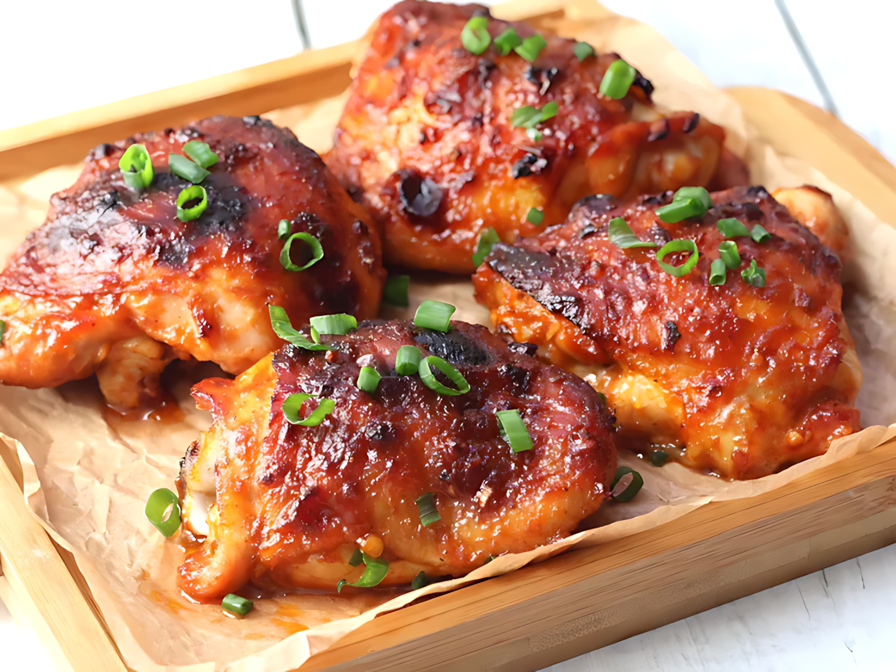

Harissa Honey Chicken

Description
These harissa honey chicken thighs are a spicy-sweet delight, rubbed in harissa paste and honey, then baked to perfection. Adjust the amount of harissa paste to suit your spice preference.
Recipe
Ingredients
- Meat: 4 large skin-on, bone-in chicken thighs.
- Oil: 2 tablespoons olive oil.
- garlic and Onion: 2 cloves garlic, minced and 1 green onion, thinly sliced.
- Sauce: 3 tablespoons harissa paste.
- Spices:
- 1/2 teaspoon ground cumin.
- 1/2 teaspoon ground coriander.
- 1/2 teaspoon salt.
- 1/8 teaspoon freshly ground black pepper.
How to Make Harissa Honey Chicken Step-By-Step
Here's a very brief overview of what you can expect when you make homemade Harissa Honey Chicken:
- Step 1: Preheat the oven to 375 degrees F (190 degrees C).
- Step 2: Stir harissa paste, honey, olive oil, minced garlic, cumin, coriander, salt, and pepper together in a bowl. Rub the mixture over each chicken thigh and under the skin, ensuring each thigh is coated evenly. Place chicken thighs skin-side up in a baking dish.
- Step 3: Bake in the preheated oven until the chicken is cooked through and the skin is browned and caramelized, 35 to 40 minutes. An instant-read thermometer inserted into thickest part of thigh, near the bone, should read 165 degrees F (74 degrees C). Garnish with green onions.